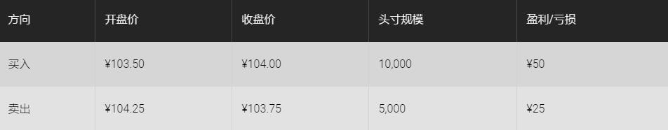

<!DOCTYPE html>
<html>
</html>
<head>
  <meta charset="utf-8">
  <meta http-equiv="X-UA-Compatible" content="IE=edge">
  <title>外汇站（fx-z.com） - 交易记录</title>
  <meta name="description" content="">
  <meta name="viewport" content="width=device-width, initial-scale=1">
  <meta name="robots" content="all,follow">
  <!-- Bootstrap CSS-->
  <link rel="stylesheet" href="vendor/bootstrap/css/bootstrap.min.css">
  <!-- Font Awesome CSS-->
  <link rel="stylesheet" href="vendor/font-awesome/css/font-awesome.min.css">
  <!-- Google fonts - Roboto-->
  <link rel="stylesheet" href="https://fonts.googleapis.com/css?family=Roboto:400,300,700,400italic">
  <!-- owl carousel-->
  <link rel="stylesheet" href="vendor/owl.carousel/assets/owl.carousel.css">
  <link rel="stylesheet" href="vendor/owl.carousel/assets/owl.theme.default.css">
  <!-- theme stylesheet-->
  <link rel="stylesheet" href="css/style.default.css" id="theme-stylesheet">
  <!-- Custom stylesheet - for your changes-->
  <link rel="stylesheet" href="css/custom.css">
  <!-- Favicon-->
  <link rel="shortcut icon" href="img/favicon.png">
  <!-- Tweaks for older IEs--><!--[if lt IE 9]>
    <script src="https://oss.maxcdn.com/html5shiv/3.7.3/html5shiv.min.js"></script>
    <script src="https://oss.maxcdn.com/respond/1.4.2/respond.min.js"></script><![endif]-->
</head>
<body>
  <div id="all">
    <div class="container-fluid">
      <div class="row row-offcanvas row-offcanvas-left"> 
        <!--   *** SIDEBAR ***-->
        <div id="sidebar" class="col-md-4 col-lg-3 sidebar-offcanvas">
          <div class="sidebar-content">
            <h1 class="sidebar-heading"> <a href="https://fx-z.com">fx-z.com</a></h1>
            <p class="sidebar-p">介绍外汇相关的基本知识，告诉您如何进行自己的技术面和基本面分析，讲解先进的交易理念，并且为您阐述失败交易者与专业交易者之间的真正区别。 </p>
            <p class="sidebar-p">通过这些课程的学习，您将学会如何根据自己的优势来应用情绪分析，还将了解真实世界的事件会对货币汇率产生什么影响，央行在外汇市场中所发挥的作用，以及交易者在颇受欢迎的即期外汇交易中有哪些选择方案。 </p>
            <ul class="sidebar-menu">
                <!-- Link-->
                <li class="sidebar-item"><a href="https://fx-z.com" class="sidebar-link">首页</a></li>
                <!-- Link-->
                <li class="sidebar-item"><a href="cihui.html" class="sidebar-link">外汇词汇</a></li>
                <!-- Link-->
                <li class="sidebar-item"><a href="ebook.html" class="sidebar-link">获取外汇电子书</a></li>
            </ul>
            <p class="social"><a href="https://www.forextimechina.com.cn/zh?form=IZIN" target="_blank"data-animate-hover="pulse" class="external facebook"><i class="fa fa-eur"></i></a><a href="https://www.forextimechina.com.cn/zh?form=IZIN" target="_blank" data-animate-hover="pulse" class="external gplus"><i class="fa fa-gbp"></i></a><a href="https://www.forextimechina.com.cn/zh?form=IZIN" target="_blank" data-animate-hover="pulse" class="external twitter"><i class="fa fa-rmb"></i></a><a href="https://www.forextimechina.com.cn/zh?form=IZIN" target="_blank" title="" class="external instagram"><i class="fa fa-dollar"></i></a><a href="https://www.forextimechina.com.cn/zh?form=IZIN" target="_blank" data-animate-hover="pulse" class="email"><i class="fa fa-money"></i></a></p>
            <div class="copyright text-center text-md-left">
             
              
            </div>
          </div>
        </div>
        <!--   *** SIDEBAR END ***  -->
        <!--   *** DETAIL ***-->
        <div class="col-md-8 col-lg-9 content-column white-background">
          <div class="small-navbar d-flex d-md-none">
            <button type="button" data-toggle="offcanvas" class="btn btn-outline-primary"> <i class="fa fa-align-left mr-2"></i>菜单</button>
            <h1 class="small-navbar-heading"> <a href="https://fx-z.com/15-4.html">下一篇 </a></h1>
          </div>
          <div class="row">
            <div class="col-xl-10">
              <div class="content-column-content">
                <h1>交易记录</h1>
   <p>
    选择交易货币对以及确定货币对走势是交易者每天必须完成的主要任务。
</p>
<p>
    <strong>了解您的头寸和盈亏</strong>
</p>
<p>
    交易者还需完成简单的记账工作，以确保关于获利了结或止损的决策得以正确执行。
</p>
<p>
    例如，交易者以 1.3900 的价格买入 100,000 欧元，等它上涨至 1.3945 时可获利 45 点或 450 美元。无论交易者一天仅执行几笔交易还是执行许多笔交易，他都可以选择手写账目或计算机电子表格。在本例中，交易日结束时记事本仅记入一笔交易，交易者的盈利为 450 美元。
</p>
<p>
    但是，交易者可能对相同货币或不同货币执行多笔交易，并且需要记录这些交易。您需要为每一种货币对准备一份账目。单种货币对的账目可能如下所示（四项交易两轮头寸）：
</p>
<p>
     
</p>
<p>
    有些交易者还发现，账目中计入了新建头寸的日期，这可以在您与经纪商就具体价格产生争议时派上用场。
</p>
<p>
    无论交易者是采用 Excel 电子表格还是复杂的记账/记录系统，了解您的盈利与亏损始终是极为重要的。如果您交易单种货币或多种货币，这一点同样适用。如果交易者不清楚平均亏损而且未追踪盈/亏比，他将无法对正确的头寸规模做出正确的决策。
</p>
<p>
    在上述日元案例中，交易者可能希望以 ￥103.50 的价格做多 USD/JPY，并且在 ￥104.50 获利了结（盈利 $95.69），在 ￥103.00 止损（最多亏损 $48.54 ）。进入和退出新交易之后，交易者的平均赢率和平均利润均发生改变，因此头寸规模也发生相应的变化。这种情况下，交易者的盈利略低于计划水平，但非常接近于初始目标。
</p>
<p>
    <strong>头寸隔夜利息</strong>
</p>
<p>
    如果您将外汇头寸持仓过夜，当您做多高息货币对低息货币，您通常可以获得由利率差异所带来的收益，而当您做空高息货币对低息货币时，您需要支付利息。这被称为隔夜利息收益/成本。您将头寸从即期（通常为两个工作日）展期至第三个工作日，则第三个工作日成为新的即期日。如果今日为周二，即期到期日为周四，则交易者可以将即期头寸展期至新的即期日，即周五。在当今复杂的计算机环境中，大型银行的即期交易者每日入场后往往发现其头寸平均价格已经因为隔夜利息成本而经过调整。（在计算机未被普及的不便时期，专业的银行交易员每日早晨不得不通过询问后台部门来计算成本或盈利。）
</p>
<p>
    前一晚以 $1.3802 的价格做多欧元的交易者可能发现开盘头寸的平均值为 1.38025，其中的 0. 00005为隔夜利息成本。在 MetaTrader 平台中，开盘头寸的价格保持一致，但账户余额直接收取掉期费用，且头寸的掉期值发生变化。大部分面向零售交易者的平台均收取隔夜利息，且有些平台会公布隔夜利息利率，其部分原因是因为，在零售即期外汇的早期，保持隔夜利息收益一度是经纪商的主要利润来源，这种情况一直持续到交易者陷入窘境为止。于 17:00 EST 之前建仓且延期持有的交易将面临隔夜利息收益或隔夜利息亏损，具体取决于利率差异。那些进行期货交易的人士无需担忧隔夜利息成本，因为根据定义，该成本已经包括在交易内。
</p>
<p>
    在低息环境中，隔夜利息成本/收益通常不能为主要货币带来太大的影响，但对于一些异国货币对而言，隔夜利息成本可能是非常危险的。当货币大幅下跌时，央行曾利用短期利率来减缓货币的流失。如果从宏观角度来看，货币对一天的变化幅度大约可达到 10%，则交易者可能不会介意每日损失 2% 的利率差异。不过，如果利率差异成本达到 10%，则将货币持仓过夜的成本可能高于外汇波动所带来的收益。
</p>
<p>
    <br/>
</p>
<p>
    <br/>
</p>
              </div>
            </div>
          </div>
        </div>
      </div>
    </div>
  </div>
  <!-- JavaScript files-->
  <script src="vendor/jquery/jquery.min.js"></script>
  <script src="vendor/popper.js/umd/popper.min.js"> </script>
  <script src="vendor/bootstrap/js/bootstrap.min.js"></script>
  <script src="vendor/jquery.cookie/jquery.cookie.js"> </script>
  <script src="vendor/owl.carousel/owl.carousel.min.js"></script>
  <script src="vendor/masonry-layout/masonry.pkgd.min.js"></script>
  <script src="js/front.js"></script>
</body>